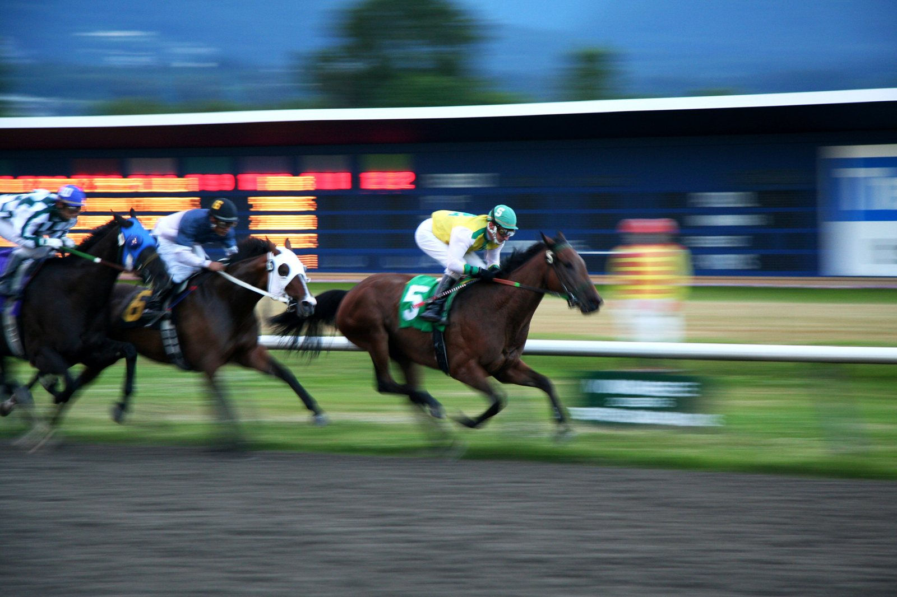

France Galop prohíbe el látigo detrás de la cincha en las carreras de amateurs desde el 15 de noviembre
France Galop ha endurecido la norma del látigo en las carreras reservadas a jockeys amateurs: desde el 15 de noviembre quedará «estrictamente prohibido» tocar al caballo detrás de la cincha o en la grupa, un uso que hasta ahora era objeto de amonestación.

El cambio llega tras una revisión conjunta de los comisarios y del Club de Jockeys Amateurs. France Galop defiende que las estadísticas internas muestran que las infracciones con el látigo son proporcionalmente más frecuentes en las carreras de aficionados que en las profesionales, y lo atribuye a que esos jockeys corren con mucha menor frecuencia: la escasez de monta rompe la técnica y el equilibrio con el caballo en los últimos metros. La hoja oficial subraya además la voluntad de poner el acento en la vertiente deportiva de la monta amateur y en el bienestar del caballo.
El cuello y la espalda quedan como únicas zonas en las que el jockey amateur podrá emplear el látigo, con un máximo de cuatro toques y siempre llevando las dos manos en las riendas. Darle al caballo en esas zonas con una sola mano sobre las riendas pasa a contar como infracción. Hasta el 15 de noviembre, un periodo de transición, los jockeys que toquen al caballo detrás de la cincha o en la grupa solo recibirán una amonestación formal, y los comisarios recordarán la norma antes de cada reunión.
El escalado de sanciones a partir del 15 de noviembre comprende seis supuestos: de cinco a ocho toques en cuello o espalda sin las dos manos en las riendas, el primer toque detrás de la cincha o en la grupa, más de ocho toques en cualquiera de las zonas y levantar el codo por encima del hombro. Las cuantías económicas acompañan a cada supuesto, aunque figuran en documentos anexos. France Galop concluye que, antes del arranque de la fase experimental, acompañará la medida con «prevención y educación» en la formación de jockeys amateurs.
Por Martín Larrañeta